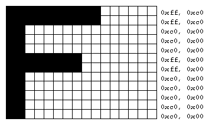

So far, most of the discussion in this guide has concerned the rendering of geometric data - points, lines, and polygons. Two other important classes of data that can be rendered by OpenGL are
Both bitmaps and image data take the form of rectangular arrays of pixels. One difference between them is that a bitmap consists of a single bit of information about each pixel, and image data typically includes several pieces of data per pixel (the complete red, green, blue, and alpha color components, for example). Also, bitmaps are like masks in that they're used to overlay another image, but image data simply overwrites or is blended with whatever data is in the framebuffer.
This chapter describes how to draw pixel data (bitmaps and images) from processor memory to the framebuffer and how to read pixel data from the framebuffer into processor memory. It also describes how to copy pixel data from one position to another, either from one buffer to another or within a single buffer. This chapter contains the following major sections:
In most cases, the necessary pixel operations are simple, so the first three sections might be all you need to read for your application. However, pixel manipulation can be complex - there are many ways to store pixel data in memory, and you can apply any of several transformations to pixels as they're moved to and from the framebuffer. These details are the subject of the fourth section of this chapter. Most likely, you'll want to read this section only when you actually need to make use of the information. The last section provides useful tips to get the best performance when rendering bitmaps and images.
Bitmaps and Fonts
A bitmap is a rectangular array of 0s and 1s that serves as a drawing mask for a corresponding rectangular portion of the window. Suppose you're drawing a bitmap and that the current raster color is red. Wherever there's a 1 in the bitmap, the corresponding pixel is replaced by a red pixel (or combined with a red pixel, depending on which per-fragment operations are in effect. (See "Testing and Operating on Fragments" in Chapter 10.) If there's a 0 in the bitmap, the contents of the pixel are unaffected. The most common use of bitmaps is for drawing characters on the screen.
OpenGL provides only the lowest level of support for drawing strings of characters and manipulating fonts. The commands glRasterPos*() and glBitmap() position and draw a single bitmap on the screen. In addition, through the display-list mechanism, you can use a sequence of character codes to index into a corresponding series of bitmaps representing those characters. (See Chapter 7 for more information about display lists.) You'll have to write your own routines to provide any other support you need for manipulating bitmaps, fonts, and strings of characters.
Consider Example 8-1, which draws the character F three times on the screen. Figure 8-1 shows the F as a bitmap and its corresponding bitmap data.

Figure 8-1 : Bitmapped F and Its Data
Example 8-1 : Drawing a Bitmapped Character: drawf.c
#include <GL/gl.h>
#include <GL/glu.h>
#include <GL/glut.h>
#include <stdlib.h>
GLubyte rasters[24] = {
0xc0, 0x00, 0xc0, 0x00, 0xc0, 0x00, 0xc0, 0x00, 0xc0, 0x00,
0xff, 0x00, 0xff, 0x00, 0xc0, 0x00, 0xc0, 0x00, 0xc0, 0x00,
0xff, 0xc0, 0xff, 0xc0};
void init(void)
{
glPixelStorei (GL_UNPACK_ALIGNMENT, 1);
glClearColor (0.0, 0.0, 0.0, 0.0);
}
void display(void)
{
glClear(GL_COLOR_BUFFER_BIT);
glColor3f (1.0, 1.0, 1.0);
glRasterPos2i (20, 20);
glBitmap (10, 12, 0.0, 0.0, 11.0, 0.0, rasters);
glBitmap (10, 12, 0.0, 0.0, 11.0, 0.0, rasters);
glBitmap (10, 12, 0.0, 0.0, 11.0, 0.0, rasters);
glFlush();
}
void reshape(int w, int h)
{
glViewport(0, 0, (GLsizei) w, (GLsizei) h);
glMatrixMode(GL_PROJECTION);
glLoadIdentity();
glOrtho (0, w, 0, h, -1.0, 1.0);
glMatrixMode(GL_MODELVIEW);
}
void keyboard(unsigned char key, int x, int y)
{
switch (key) {
case 27:
exit(0);
}
}
int main(int argc, char** argv)
{
glutInit(&argc, argv);
glutInitDisplayMode(GLUT_SINGLE | GLUT_RGB);
glutInitWindowSize(100, 100);
glutInitWindowPosition(100, 100);
glutCreateWindow(argv[0]);
init();
glutReshapeFunc(reshape);
glutKeyboardFunc(keyboard);
glutDisplayFunc(display);
glutMainLoop();
return 0;
}
In Figure 8-1, note that the visible part of the F character is at most 10 bits wide. Bitmap data is always stored in chunks that are multiples of 8 bits, but the width of the actual bitmap doesn't have to be a multiple of 8. The bits making up a bitmap are drawn starting from the lower-left corner: First, the bottom row is drawn, then the next row above it, and so on. As you can tell from the code, the bitmap is stored in memory in this order - the array of rasters begins with 0xc0, 0x00, 0xc0, 0x00 for the bottom two rows of the F and continues to 0xff, 0xc0, 0xff, 0xc0 for the top two rows.
The commands of interest in this example are glRasterPos2i() and glBitmap(); they're discussed in detail in the next section. For now, ignore the call to glPixelStorei(); it describes how the bitmap data is stored in computer memory. (See "Controlling Pixel-Storage Modes" for more information.)
The Current Raster Position
The current raster position is the origin where the next bitmap (or image) is to be drawn. In the F example, the raster position was set by calling glRasterPos*() with coordinates (20, 20), which is where the lower-left corner of the F was drawn:
glRasterPos2i(20, 20);
- void glRasterPos{234}{sifd}(
TYPE x, TYPE y, TYPE z, TYPE w);
void glRasterPos{234}{sifd}v(TYPE *coords);
Sets the current raster position. The x, y, z, and w arguments specify the coordinates of the raster position. If the vector form of the function is used, the coords array contains the coordinates of the raster position. If glRasterPos2*() is used, z is implicitly set to zero and w is implicitly set to one; similarly, with glRasterPos3*(), w is set to one.
The coordinates of the raster position are transformed to screen coordinates in exactly the same way as coordinates supplied with a glVertex*() command (that is, with the modelview and perspective matrices). After transformation, they either define a valid spot in the viewport, or they're clipped out because the coordinates were outside the viewing volume. If the transformed point is clipped out, the current raster position is invalid.
Note: If you want to specify the raster position in screen coordinates, you'll want to make sure you've specified the modelview and projection matrices for simple 2D rendering, with something like this sequence of commands, where width and height are also the size (in pixels) of the viewport:
glMatrixMode(GL_PROJECTION);
glLoadIdentity();
gluOrtho2D(0.0, (GLfloat) width, 0.0, (GLfloat) height);
glMatrixMode(GL_MODELVIEW);
glLoadIdentity();
To obtain the current raster position, you can use the query command glGetFloatv() with GL_CURRENT_RASTER_POSITION as the first argument. The second argument should be a pointer to an array that can hold the (x, y, z, w) values as floating-point numbers. Call glGetBooleanv() with GL_CURRENT_RASTER_POSITION_VALID as the first argument to determine whether the current raster position is valid.
Drawing the Bitmap
Once you've set the desired raster position, you can use the glBitmap() command to draw the data.
- void glBitmap(GLsizei
width, GLsizei height, GLfloat xbo,
GLfloat ybo, GLfloat xbi,
GLfloat ybi, const GLubyte *bitmap);
Draws the bitmap specified by bitmap, which is a pointer to the bitmap image. The origin of the bitmap is placed at the current raster position. If the current raster position is invalid, nothing is drawn, and the raster position remains invalid. The width and height arguments indicate the width and height, in pixels, of the bitmap. The width need not be a multiple of 8, although the data is stored in unsigned characters of 8 bits each. (In the F example, it wouldn't matter if there were garbage bits in the data beyond the tenth bit; since glBitmap() was called with a width of 10, only 10 bits of the row are rendered.) Use xbo and ybo to define the origin of the bitmap (positive values move the origin up and to the right of the raster position; negative values move it down and to the left); xbi and ybi indicate the x and y increments that are added to the raster position after the bitmap is rasterized (see Figure 8-2).

Figure 8-2 : Bitmap and Its Associated Parameters
Allowing the origin of the bitmap to be placed arbitrarily makes it easy for characters to extend below the origin (typically used for characters with descenders, such as g, j, and y), or to extend beyond the left of the origin (used for various swash characters, which have extended flourishes, or for characters in fonts that lean to the left).
After the bitmap is drawn, the current raster position is advanced by xbi and ybi in the x- and y-directions, respectively. (If you just want to advance the current raster position without drawing anything, call glBitmap() with the bitmap parameter set to NULL and with the width and height set to zero.) For standard Latin fonts, ybi is typically 0.0 and xbi is positive (since successive characters are drawn from left to right). For Hebrew, where characters go from right to left, the xbi values would typically be negative. Fonts that draw successive characters vertically in columns would use zero for xbi and nonzero values for ybi. In Figure 8-2, each time the F is drawn, the current raster position advances by 11 pixels, allowing a 1-pixel space between successive characters.
Since xbo, ybo, xbi, and ybi are floating-point values, characters need not be an integral number of pixels apart. Actual characters are drawn on exact pixel boundaries, but the current raster position is kept in floating point so that each character is drawn as close as possible to where it belongs. For example, if the code in the F example was modified so that xbi is 11.5 instead of 12, and if more characters were drawn, the space between letters would alternate between 1 and 2 pixels, giving the best approximation to the requested 1.5-pixel space.
Note: You can't rotate bitmap fonts because the bitmap is always drawn aligned to the x and y framebuffer axes.
Choosing a Color for the Bitmap
You are familiar with using glColor*() and glIndex*() to set the current color or index to draw geometric primitives. The same commands are used to set different state variables, GL_CURRENT_RASTER_COLOR and GL_CURRENT_RASTER_INDEX, for rendering bitmaps. The raster color state variables are set when glRasterPos*() is called, which can lead to a trap. In the following sequence of code, what is the color of the bitmap?
glColor3f(1.0, 1.0, 1.0); /* white */
glRasterPos3fv(position);
glColor3f(1.0, 0.0, 0.0); /* red */
glBitmap(....);
The bitmap is white! The GL_CURRENT_RASTER_COLOR is set to white when glRasterPos3fv() is called. The second call to glColor3f() changes the value of GL_CURRENT_COLOR for future geometric rendering, but the color used to render the bitmap is unchanged.
To obtain the current raster color or index, you can use the query commands glGetFloatv() or glGetIntegerv() with GL_CURRENT_RASTER_COLOR or GL_CURRENT_RASTER_INDEX as the first argument.
Fonts and Display Lists
Display lists are discussed in general terms in Chapter 7. However, a few of the display-list management commands have special relevance for drawing strings of characters. As you read this section, keep in mind that the ideas presented here apply equally well to characters that are drawn using bitmap data and those drawn using geometric primitives (points, lines, and polygons). (See "Executing Multiple Display Lists" in Chapter 7 for an example of a geometric font.)
A font typically consists of a set of characters, where each character has an identifying number (usually the ASCII code) and a drawing method. For a standard ASCII character set, the capital letter A is number 65, B is 66, and so on. The string "DAB" would be represented by the three indices 68, 65, 66. In the simplest approach, display-list number 65 draws an A, number 66 draws a B, and so on. Then to draw the string 68, 65, 66, just execute the corresponding display lists.
You can use the command glCallLists() in just this way:
void glCallLists(GLsizei n, GLenum type, const GLvoid *lists);
The first argument, n, indicates the number of characters to be drawn, type is usually GL_BYTE, and lists is an array of character codes.
Since many applications need to draw character strings in multiple fonts and sizes, this simplest approach isn't convenient. Instead, you'd like to use 65 as A no matter what font is currently active. You could force font 1 to encode A, B, and C as 1065, 1066, 1067, and font 2 as 2065, 2066, 2067, but then any numbers larger than 256 would no longer fit in an 8-bit byte. A better solution is to add an offset to every entry in the string and to choose the display list. In this case, font 1 has A, B, and C represented by 1065, 1066, and 1067, and in font 2, they might be 2065, 2066, and 2067. Then to draw characters in font 1, set the offset to 1000 and draw display lists 65, 66, and 67. To draw that same string in font 2, set the offset to 2000 and draw the same lists.
To set the offset, use the command glListBase(). For the preceding examples, it should be called with 1000 or 2000 as the (only) argument. Now what you need is a contiguous list of unused display-list numbers, which you can obtain from glGenLists():
GLuint glGenLists(GLsizei range);
This function returns a block of range display-list identifiers. The returned lists are all marked as "used" even though they're empty, so that subsequent calls to glGenLists() never return the same lists (unless you've explicitly deleted them previously). Therefore, if you use 4 as the argument and if glGenLists() returns 81, you can use display-list identifiers 81, 82, 83, and 84 for your characters. If glGenLists() can't find a block of unused identifiers of the requested length, it returns 0. (Note that the command glDeleteLists() makes it easy to delete all the lists associated with a font in a single operation.)
Most American and European fonts have a small number of characters (fewer than 256), so it's easy to represent each character with a different code that can be stored in a single byte. Asian fonts, among others, may require much larger character sets, so a byte-per-character encoding is impossible. OpenGL allows strings to be composed of 1-, 2-, 3-, or 4-byte characters through the type parameter in glCallLists(). This parameter can have any of the following values:
GL_BYTE GL_UNSIGNED_BYTE
GL_SHORT GL_UNSIGNED_SHORT
GL_INT GL_UNSIGNED_INT
GL_FLOAT GL_2_BYTES
GL_3_BYTES GL_4_BYTES
(See "Executing Multiple Display Lists" in Chapter 7 for more information about these values.)
Defining and Using a Complete Font
The glBitmap() command and the display-list mechanism described in the previous section make it easy to define a raster font. In Example 8-2, the upper-case characters of an ASCII font are defined. In this example, each character has the same width, but this is not always the case. Once the characters are defined, the program prints the message "THE QUICK BROWN FOX JUMPS OVER A LAZY DOG".
The code in Example 8-2 is similar to the F example, except that each character's bitmap is stored in its own display list. The display list identifier, when combined with the offset returned by glGenLists(), is equal to the ASCII code for the character.
Example 8-2 : Drawing a Complete Font: font.c
#include <GL/gl.h>
#include <GL/glu.h>
#include <GL/glut.h>
#include <stdlib.h>
#include <string.h>
GLubyte space[] =
{0x00, 0x00, 0x00, 0x00, 0x00, 0x00, 0x00, 0x00, 0x00, 0x00, 0x00, 0x00, 0x00};
GLubyte letters[][13] = {
{0x00, 0x00, 0xc3, 0xc3, 0xc3, 0xc3, 0xff, 0xc3, 0xc3, 0xc3, 0x66, 0x3c, 0x18},
{0x00, 0x00, 0xfe, 0xc7, 0xc3, 0xc3, 0xc7, 0xfe, 0xc7, 0xc3, 0xc3, 0xc7, 0xfe},
{0x00, 0x00, 0x7e, 0xe7, 0xc0, 0xc0, 0xc0, 0xc0, 0xc0, 0xc0, 0xc0, 0xe7, 0x7e},
{0x00, 0x00, 0xfc, 0xce, 0xc7, 0xc3, 0xc3, 0xc3, 0xc3, 0xc3, 0xc7, 0xce, 0xfc},
{0x00, 0x00, 0xff, 0xc0, 0xc0, 0xc0, 0xc0, 0xfc, 0xc0, 0xc0, 0xc0, 0xc0, 0xff},
{0x00, 0x00, 0xc0, 0xc0, 0xc0, 0xc0, 0xc0, 0xc0, 0xfc, 0xc0, 0xc0, 0xc0, 0xff},
{0x00, 0x00, 0x7e, 0xe7, 0xc3, 0xc3, 0xcf, 0xc0, 0xc0, 0xc0, 0xc0, 0xe7, 0x7e},
{0x00, 0x00, 0xc3, 0xc3, 0xc3, 0xc3, 0xc3, 0xff, 0xc3, 0xc3, 0xc3, 0xc3, 0xc3},
{0x00, 0x00, 0x7e, 0x18, 0x18, 0x18, 0x18, 0x18, 0x18, 0x18, 0x18, 0x18, 0x7e},
{0x00, 0x00, 0x7c, 0xee, 0xc6, 0x06, 0x06, 0x06, 0x06, 0x06, 0x06, 0x06, 0x06},
{0x00, 0x00, 0xc3, 0xc6, 0xcc, 0xd8, 0xf0, 0xe0, 0xf0, 0xd8, 0xcc, 0xc6, 0xc3},
{0x00, 0x00, 0xff, 0xc0, 0xc0, 0xc0, 0xc0, 0xc0, 0xc0, 0xc0, 0xc0, 0xc0, 0xc0},
{0x00, 0x00, 0xc3, 0xc3, 0xc3, 0xc3, 0xc3, 0xc3, 0xdb, 0xff, 0xff, 0xe7, 0xc3},
{0x00, 0x00, 0xc7, 0xc7, 0xcf, 0xcf, 0xdf, 0xdb, 0xfb, 0xf3, 0xf3, 0xe3, 0xe3},
{0x00, 0x00, 0x7e, 0xe7, 0xc3, 0xc3, 0xc3, 0xc3, 0xc3, 0xc3, 0xc3, 0xe7, 0x7e},
{0x00, 0x00, 0xc0, 0xc0, 0xc0, 0xc0, 0xc0, 0xfe, 0xc7, 0xc3, 0xc3, 0xc7, 0xfe},
{0x00, 0x00, 0x3f, 0x6e, 0xdf, 0xdb, 0xc3, 0xc3, 0xc3, 0xc3, 0xc3, 0x66, 0x3c},
{0x00, 0x00, 0xc3, 0xc6, 0xcc, 0xd8, 0xf0, 0xfe, 0xc7, 0xc3, 0xc3, 0xc7, 0xfe},
{0x00, 0x00, 0x7e, 0xe7, 0x03, 0x03, 0x07, 0x7e, 0xe0, 0xc0, 0xc0, 0xe7, 0x7e},
{0x00, 0x00, 0x18, 0x18, 0x18, 0x18, 0x18, 0x18, 0x18, 0x18, 0x18, 0x18, 0xff},
{0x00, 0x00, 0x7e, 0xe7, 0xc3, 0xc3, 0xc3, 0xc3, 0xc3, 0xc3, 0xc3, 0xc3, 0xc3},
{0x00, 0x00, 0x18, 0x3c, 0x3c, 0x66, 0x66, 0xc3, 0xc3, 0xc3, 0xc3, 0xc3, 0xc3},
{0x00, 0x00, 0xc3, 0xe7, 0xff, 0xff, 0xdb, 0xdb, 0xc3, 0xc3, 0xc3, 0xc3, 0xc3},
{0x00, 0x00, 0xc3, 0x66, 0x66, 0x3c, 0x3c, 0x18, 0x3c, 0x3c, 0x66, 0x66, 0xc3},
{0x00, 0x00, 0x18, 0x18, 0x18, 0x18, 0x18, 0x18, 0x3c, 0x3c, 0x66, 0x66, 0xc3},
{0x00, 0x00, 0xff, 0xc0, 0xc0, 0x60, 0x30, 0x7e, 0x0c, 0x06, 0x03, 0x03, 0xff}
};
GLuint fontOffset;
void makeRasterFont(void)
{
GLuint i, j;
glPixelStorei(GL_UNPACK_ALIGNMENT, 1);
fontOffset = glGenLists (128);
for (i = 0,j = `A'; i < 26; i++,j++) {
glNewList(fontOffset + j, GL_COMPILE);
glBitmap(8, 13, 0.0, 2.0, 10.0, 0.0, letters[i]);
glEndList();
}
glNewList(fontOffset + ` `, GL_COMPILE);
glBitmap(8, 13, 0.0, 2.0, 10.0, 0.0, space);
glEndList();
}
void init(void)
{
glShadeModel (GL_FLAT);
makeRasterFont();
}
void printString(char *s)
{
glPushAttrib (GL_LIST_BIT);
glListBase(fontOffset);
glCallLists(strlen(s), GL_UNSIGNED_BYTE, (GLubyte *) s);
glPopAttrib ();
}
/* Everything above this line could be in a library
* that defines a font. To make it work, you've got
* to call makeRasterFont() before you start making
* calls to printString().
*/
void display(void)
{
GLfloat white[3] = { 1.0, 1.0, 1.0 };
glClear(GL_COLOR_BUFFER_BIT);
glColor3fv(white);
glRasterPos2i(20, 60);
printString("THE QUICK BROWN FOX JUMPS");
glRasterPos2i(20, 40);
printString("OVER A LAZY DOG");
glFlush ();
}
void reshape(int w, int h)
{
glViewport(0, 0, (GLsizei) w, (GLsizei) h);
glMatrixMode(GL_PROJECTION);
glLoadIdentity();
glOrtho (0.0, w, 0.0, h, -1.0, 1.0);
glMatrixMode(GL_MODELVIEW);
}
void keyboard(unsigned char key, int x, int y)
{
switch (key) {
case 27:
exit(0);
}
}
int main(int argc, char** argv)
{
glutInit(&argc, argv);
glutInitDisplayMode(GLUT_SINGLE | GLUT_RGB);
glutInitWindowSize(300, 100);
glutInitWindowPosition (100, 100);
glutCreateWindow(argv[0]);
init();
glutReshapeFunc(reshape);
glutKeyboardFunc(keyboard);
glutDisplayFunc(display);
glutMainLoop();
return 0;
}
Remember that, depending on the format, anywhere from one to four elements are read (or written). For example, if the format is GL_RGBA and you're reading into 32-bit integers (that is, if type is equal to GL_UNSIGNED_INT or GL_INT), then every pixel read requires 16 bytes of storage (four components ´
four bytes/component).
Each element of the image is stored in memory as indicated by Table 8-2. If the element represents a continuous value, such as a red, green, blue, or luminance component, each value is scaled to fit into the available number of bits. For example, assume the red component is initially specified as a floating-point value between 0.0 and 1.0. If it needs to be packed into an unsigned byte, only 8 bits of precision are kept, even if more bits are allocated to the red component in the framebuffer. GL_UNSIGNED_SHORT and GL_UNSIGNED_INT give 16 and 32 bits of precision, respectively. The normal (signed) versions of GL_BYTE, GL_SHORT, and GL_INT have 7, 15, and 31 bits of precision, since the negative values are typically not used.
If the element is an index (a color index or a stencil index, for example), and the type is not GL_FLOAT, the value is simply masked against the available bits in the type. The signed versions - GL_BYTE, GL_SHORT, and GL_INT - have masks with one fewer bit. For example, if a color index is to be stored in a signed 8-bit integer, it's first masked against 0x7f. If the type is GL_FLOAT, the index is simply converted into a single-precision floating-point number (for example, the index 17 is converted to the float 17.0).
For all three functions, the exact conversions of the data going to or from the framebuffer depend on the modes in effect at the time. See the next section for details.
Since the corresponding parameters for packing and unpacking have the same meanings, they're discussed together in the rest of this section and referred to without the GL_PACK or GL_UNPACK prefix. For example, *SWAP_BYTES refers to GL_PACK_SWAP_BYTES and GL_UNPACK_SWAP_BYTES.
If the *SWAP_BYTES parameter is FALSE (the default), the ordering of the bytes in memory is whatever is native for the OpenGL client; otherwise, the bytes are reversed. The byte reversal applies to any size element, but really only has a meaningful effect for multibyte elements.
Note: As long as your OpenGL application doesn't share images with other machines, you can ignore the issue of byte ordering. If your application must render an OpenGL image that was created on a different machine and the "endianness" of the two machines differs, byte ordering can be swapped using *SWAP_BYTES. However, *SWAP_BYTES does not allow you to reorder elements (for example, to swap red and green).
The *LSB_FIRST parameter applies when drawing or reading 1-bit images or bitmaps, for which a single bit of data is saved or restored for each pixel. If *LSB_FIRST is FALSE (the default), the bits are taken from the bytes starting with the most significant bit; otherwise, they're taken in the opposite order. For example, if *LSB_FIRST is FALSE, and the byte in question is 0x31, the bits, in order, are {0, 0, 1, 1, 0, 0, 0, 1}. If *LSB_FIRST is TRUE, the order is {1, 0, 0, 0, 1, 1, 0, 0}.
Sometimes you want to draw or read only a subrectangle of the entire rectangle of image data stored in memory. If the rectangle in memory is larger than the subrectangle that's being drawn or read, you need to specify the actual length (measured in pixels) of the larger rectangle with *ROW_LENGTH. If *ROW_LENGTH is zero (which it is by default), the row length is understood to be the same as the width that's specified with glReadPixels(), glDrawPixels(), or glCopyPixels(). You also need to specify the number of rows and pixels to skip before starting to copy the data for the subrectangle. These numbers are set using the parameters *SKIP_ROWS and *SKIP_PIXELS, as shown in Figure 8-9. By default, both parameters are 0, so you start at the lower-left corner.
Often a particular machine's hardware is optimized for moving pixel data to and from memory, if the data is saved in memory with a particular byte alignment. For example, in a machine with 32-bit words, hardware can often retrieve data much faster if it's initially aligned on a 32-bit boundary, which typically has an address that is a multiple of 4. Likewise, 64-bit architectures might work better when the data is aligned to 8-byte boundaries. On some machines, however, byte alignment makes no difference.
As an example, suppose your machine works better with pixel data aligned to a 4-byte boundary. Images are most efficiently saved by forcing the data for each row of the image to begin on a 4-byte boundary. If the image is 5 pixels wide and each pixel consists of 1 byte each of red, green, and blue information, a row requires 5 ´
3 = 15 bytes of data. Maximum display efficiency can be achieved if the first row, and each successive row, begins on a 4-byte boundary, so there is 1 byte of waste in the memory storage for each row. If your data is stored like this, set the *ALIGNMENT parameter appropriately (to 4, in this case).
If *ALIGNMENT is set to 1, the next available byte is used. If it's 2, a byte is skipped if necessary at the end of each row so that the first byte of the next row has an address that's a multiple of 2. In the case of bitmaps (or 1-bit images) where a single bit is saved for each pixel, the same byte alignment works, although you have to count individual bits. For example, if you're saving a single bit per pixel, the row length is 75, and the alignment is 4, then each row requires 75/8, or 9 3/8 bytes. Since 12 is the smallest multiple of 4 that is bigger than 9 3/8, 12 bytes of memory are used for each row. If the alignment is 1, then 10 bytes are used for each row, as 9 3/8 is rounded up to the next byte. (There is a simple use of glPixelStorei() in Example 8-4.)
As image data is transferred from memory into the framebuffer, or from the framebuffer into memory, OpenGL can perform several operations on it. For example, the ranges of components can be altered - normally, the red component is between 0.0 and 1.0, but you might prefer to keep it in some other range; or perhaps the data you're using from a different graphics system stores the red component in a different range. You can even create maps to perform arbitrary conversion of color indices or color components during pixel transfer. Conversions such as these performed during the transfer of pixels to and from the framebuffer are called pixel-transfer operations. They're controlled with the glPixelTransfer*() and glPixelMap*() commands.
Be aware that although the color, depth, and stencil buffers have many similarities, they don't behave identically, and a few of the modes have special cases for special buffers. All the mode details are covered in this section and the sections that follow, including all the special cases.
If the GL_MAP_COLOR or GL_MAP_STENCIL parameter is TRUE, then mapping is enabled. See the next subsection to learn how the mapping is done and how to change the contents of the maps. All the other parameters directly affect the pixel component values.
A scale and bias can be applied to the red, green, blue, alpha, and depth components. For example, you may wish to scale red, green, and blue components that were read from the framebuffer before converting them to a luminance format in processor memory. Luminance is computed as the sum of the red, green, and blue components, so if you use the default value for GL_RED_SCALE, GL_GREEN_SCALE and GL_BLUE_SCALE, the components all contribute equally to the final intensity or luminance value. If you want to convert RGB to luminance, according to the NTSC standard, you set GL_RED_SCALE to .30, GL_GREEN_SCALE to .59, and GL_BLUE_SCALE to .11.
Indices (color and stencil) can also be transformed. In the case of indices a shift and offset are applied. This is useful if you need to control which portion of the color table is used during rendering.
The maximum size of the maps is machine-dependent. You can find the sizes of the pixel maps supported on your machine with glGetIntegerv(). Use the query argument GL_MAX_PIXEL_MAP_TABLE to obtain the maximum size for all the pixel map tables, and use GL_PIXEL_MAP_*_TO_*_SIZE to obtain the current size of the specified map. The six maps whose address is a color index or stencil index must always be sized to an integral power of 2. The four RGBA maps can be any size from 1 through GL_MAX_PIXEL_MAP_TABLE.
To understand how a table works, consider a simple example. Suppose that you want to create a 256-entry table that maps color indices to color indices using GL_PIXEL_MAP_I_TO_I. You create a table with an entry for each of the values between 0 and 255 and initialize the table with glPixelMap*(). Assume you're using the table for thresholding and want to map indices below 101 (indices 0 to 100) to 0, and all indices 101 and above to 255. In this case, your table consists of 101 0s and 155 255s. The pixel map is enabled using the routine glPixelTransfer*() to set the parameter GL_MAP_COLOR to TRUE. Once the pixel map is loaded and enabled, incoming color indices below 101 come out as 0, and incoming pixels between 101 and 255 are mapped to 255. If the incoming pixel is larger than 255, it's first masked by 255, throwing out all the bits above the eighth, and the resulting masked value is looked up in the table. If the incoming index is a floating-point value (say 88.14585), it's rounded to the nearest integer value (giving 88), and that number is looked up in the table (giving 0).
Using pixel maps, you can also map stencil indices or convert color indices to RGB. (See "Reading and Drawing Pixel Rectangles" for information about the conversion of indices.)
After the pixel-storage modes and pixel-transfer operations are applied, images and bitmaps are rasterized. Normally, each pixel in an image is written to a single pixel on the screen. However, you can arbitrarily magnify, reduce, or even flip (reflect) an image by using glPixelZoom().
Any fragments whose centers lie inside this rectangle (or on its bottom or left boundaries) are produced in correspondence with this particular group of elements.
A negative zoom can be useful for flipping an image. OpenGL describes images from the bottom row of pixels to the top (and from left to right). If you have a "top to bottom" image, such as a frame of video, you may want to use glPixelZoom(1.0, -1.0) to make the image right side up for OpenGL. Be sure that you reposition the current raster position appropriately, if needed.